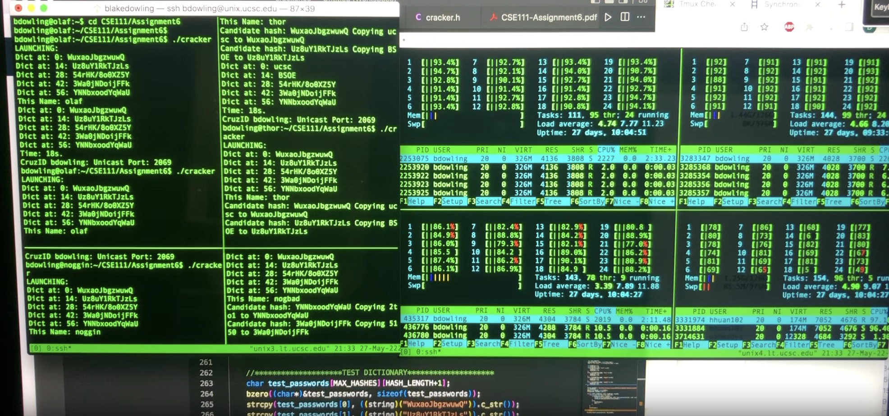
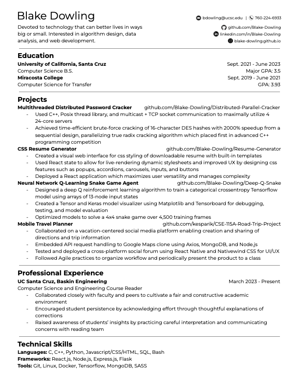

Intro
Devoted to technology that can better lives in ways big or small. Interested in algorithm design, data analysis, and web development. my projects
I have created personal assistance and machine learning projects using React and Tensorflow, and I'm currently working on collaborative efforts to encourage social interaction through React Native and Python apps.
Projects
Multithreaded Distributed Password Cracker
github.com/Blake-Dowling/Distributed-Parallel-Cracker
- Solved time-efficient brute-force DES hash decryption using C++, Posix Thread Library, and socket communication to maximally utilize 4 24-core servers
- Optimized multicast and TCP interaction to achieve a 2000% speedup from my sequential true radix cracking algorithm, winning first place in an advanced C++ programming competition

CSS Resume Generator
github.io/Resume-Generator/
github.com/Blake-Dowling/Resume-Generator
Work

UC Santa Cruz, Baskin Engineering
Computer Science and Engineering Course Reader
- Collaborated closely with faculty and peers to cultivate a fair and constructive academic environment
- Encouraged student persistence by acknowledging effort through thoughtful explanations of corrections
- Raised awareness of students’ insights by practicing careful interpretation and communicating concerns with reading team
Resume

Contact